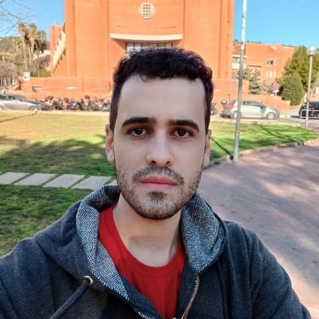

Rubem Vasconcelos Pacelli
GNSS, AI in comm./nav., deep learning, signal processing, estimation, detection & adaptive filtering.

GNSS, AI in comm./nav., deep learning, signal processing, estimation, detection & adaptive filtering.